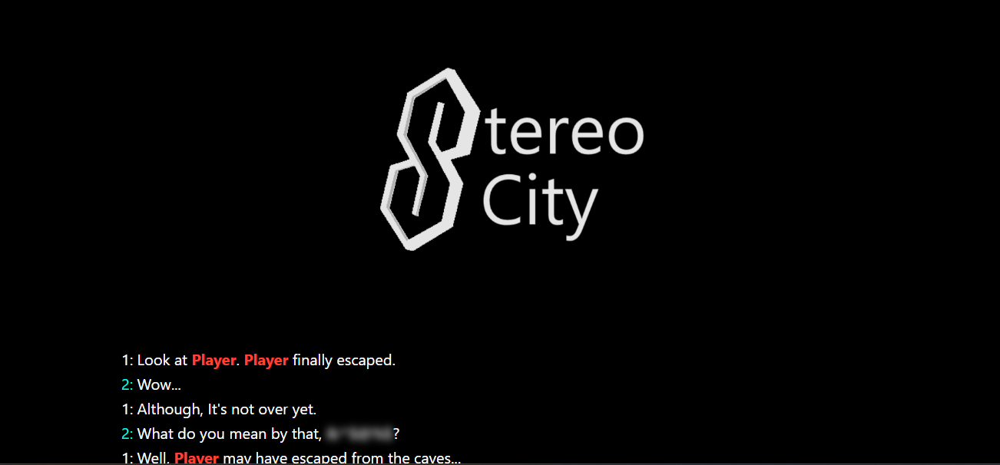

AmpleVarious.c4 is a Brazilian developer, creator, UI designer, and writer. Describing themselves as a "nerd," they focus primarily on open-source tool modifications, retro operating system preservation, and community-driven game development experiences within platforms like Roblox.
They are widely open to casual conversations and actively maintain public code repositories formerly grouped alongside a personal community hub.
Media & Showcase Gallery
Developer Profile Picture
Projects

A free and open-source utility built to mimic modifications like Vencord and
Revenge, bringing client features to WhatsApp while relying safely on the original
client infrastructure.

A platform dedicated to archiving custom ROMs, third-party apps, hacks, and
resources for the Windows Phone (7-7.8) environment. Plans include an independent
app store ecosystem.
Roblox & Rhythm Game Engines

An asymmetric game structure originally planned around real-life events. Developed
under the legacy moniker "Cyn⁴" (derived from Murder Drones). Production is
currently paused.
A conceptual Roblox experience designed to span across 7 sequential installments
tracking pieces of a fractured heart element.


A detailed FNAF:SL fan-project co-developed alongside Norvyn3, v, and xhnz, mapping
out custom lore regarding alternate corporate histories.

An optimized custom FNF branching framework featuring modular setups for lyric
coordination, perspective rendering adjustments, and dynamic camera shifts.

The planned flagship launch title showcasing the MIRE foundation engine,
incorporating mapped sets from legendary Brazilian rock performer Fernandinho, the starter album being "Teus Sonhos" (DVD, Live at HSBC Arena, RJ), the first 3 songs in form of tutorial.

An expansive open-world sandbox narrative layout built for exploration and
atmospheric quest solving.
A functional media application template configured for Stereo City playback
behaviors, designed after classic Zune layouts.
A trading card pack simulator featuring built-in multiplayer crossover nodes and
internal currency arcade lobbies.